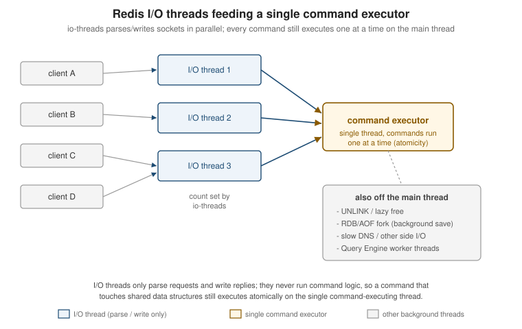

Architecture, Keyspace & Eviction
|
This content was generated with the assistance of AI and should be verified against the official Redis documentation before being relied on in production. This section’s bibliography lists the reference material consulted while preparing these pages. |
Examples on this page target Redis Open Source 8.10 (specifically 8.10.2), with client examples against Jedis 8
and Lettuce 7.7. This page covers how a single Redis instance actually executes commands, how the Bookshop
scenario’s keys are named and organised, how expiration works, and how maxmemory eviction policies decide
what gets thrown away when memory runs out.
Execution model
A Redis instance runs almost everything on one thread. Every command Redis executes — a SET, a LPUSH,
a whole MULTI/EXEC transaction, a Lua script — runs to completion on that single command-executing
thread before the next command starts. This is what makes single commands (and scripts, and transactions)
atomic with respect to each other: nothing can observe a data structure half-mutated by another client,
because there is never more than one command touching it at a time. It also means there is no lock
contention inside Redis’s own data structures, which is a large part of why Redis is fast for typical
small, in-memory operations.
"Single-threaded" describes command execution, not the whole process. Several things run on other threads or other processes:
-
I/O threads — since Redis 8.0, the
io-threadsdirective lets Redis parse client requests and write replies on a configurable number of side threads, in parallel across connections. This does not change the execution model above: I/O threads only handle the socket-level parsing/writing work, never command logic, so the command executor itself is still single-threaded and commands still run one at a time. Redis suggests enablingio-threadsonly on machines with four or more cores, leaving at least one core free for the main thread. -
Background save —
BGSAVEand automatic RDB snapshotting fork the process; the child writes the snapshot from its own copy-on-write memory view while the parent keeps serving commands. -
Lazy free —
UNLINK, andFLUSHALL/FLUSHDB ASYNC, hand the actual memory reclamation of a large value to a background thread instead of blocking the command executor while it frees potentially millions of allocations. -
Query Engine worker threads — Redis’s Query Engine (the module behind hash/JSON search and vector search) runs its own worker thread pool for index building and query execution, separate from the core command-executing thread.

RESP2 vs RESP3
Redis clients speak RESP (the Redis Serialization Protocol). A connection starts in RESP2 by default;
sending HELLO 3 switches it to RESP3 for the rest of that connection. RESP3 adds native map, set and
double/boolean types (so a client library can hand back a proper map instead of a flat array of alternating
keys and values), and, more importantly, a push type: a message the server sends unprompted, not as the
reply to a request. Pub/sub messages, MONITOR output, and client-side caching invalidation messages all
arrive as RESP3 push frames when the connection has negotiated RESP3. A client that stays on RESP2 still
receives the same information, just multiplexed as ordinary replies/pushes in the older wire format.
$ redis-cli -3
127.0.0.1:6379> HELLO 3
1# "server" => "redis"
2# "version" => "8.10.2"
3# "proto" => (integer) 3
4# "id" => (integer) 17
5# "mode" => "standalone"
6# "role" => "master"
7# "modules" => (empty array)See Redis serialization protocol specification for the full RESP2/RESP3 wire format and HELLO for the handshake itself.
Client handling limits
A handful of server-side settings bound how much work a connected client can impose before Redis protects itself:
| Setting | Purpose |
|---|---|
|
Hard cap on simultaneously connected clients (default |
|
Closes a client connection after it has been idle for this many seconds ( |
|
Per client class ( |
Because the command executor is single-threaded, a command that takes a long time to run — a large
KEYS *, an unbounded SORT, a poorly-written Lua script, an O(N) command over a huge collection — blocks
every other client for its whole duration; there is no other thread to serve them from meanwhile. Blocking
commands such as BLPOP/BRPOP/XREAD BLOCK are a deliberate exception: they suspend the *calling* client
without occupying the executor while waiting, so other clients keep being served normally. For scripts and
transactions, busy-reply-threshold (the renamed lua-time-limit) sets how many milliseconds a script may
run before Redis starts replying BUSY to most other commands, which is a diagnostic signal rather than a
way to actually stop the running script — only SCRIPT KILL (harmless for a read-only script) or SHUTDOWN
NOSAVE recovers a genuinely stuck one.
See Client information and Redis configuration for the full set of client-handling directives.
Keyspace
Redis has one flat keyspace per logical database: every key — whatever data type it holds — lives in the same namespace, so key names are the only structure Redis itself imposes. The Bookshop examples used throughout this Redis section follow one consistent naming scheme, introduced here and reused unchanged on every later page:
| Concern | Redis structure |
|---|---|
Books |
JSON |
Catalogue cache |
string |
Cart |
hash |
Session |
|
Search index |
|
Vector set |
|
Order events stream |
|
Best-sellers |
sorted set |
Stores |
geo |
Recently viewed |
list |
Rate limit |
|
Bloom/HLL |
|
Time series |
|
Pub/sub |
|
Lock |
|
The scheme is a :-delimited hierarchy — an application prefix (bookshop), an entity or feature name, then
an identifier — which is a convention Redis itself does not enforce, but which every client, SCAN MATCH
pattern, and ACL key pattern on later pages relies on.
Logical databases
A single Redis server (outside Cluster mode) exposes 16 numbered logical databases by default, selected with
SELECT <index> on a connection; keys in one are invisible to commands run against another, and MOVE shifts
a key from one to another. SELECT is a per-connection state, so a connection pool must not assume every
borrowed connection is still on the database it last selected. Redis Cluster only ever has database 0 — multi-database SELECT is not supported across a cluster, because keys are distributed across shards by hash
slot and a second logical database per node would not compose with that sharding. Applications that need
Cluster and also want dataset isolation reach for separate key prefixes (as the Bookshop scheme does) or
separate Redis deployments instead of SELECT.
Inspecting and manipulating keys
| Command | Purpose |
|---|---|
|
Counts how many of the given keys are present (a key can be counted more than once if repeated in the argument list). |
|
Returns the key’s data type ( |
|
Renames a key, overwriting |
|
Removes keys synchronously, on the command-executing thread — for a large value this blocks every other client for as long as freeing it takes. |
|
Same contract as |
OBJECT ENCODING key reports the concrete internal representation Redis chose for a value — for example a
small hash stored as listpack versus a large one promoted to hashtable, or a small sorted set as
listpack versus skiplist — which is useful when a value is using more memory or behaving with different
complexity than expected, since the encoding (not just the declared type) determines both.
Listing keys in a running Redis instance is done with SCAN, not KEYS. KEYS pattern walks the entire
keyspace in one call and returns every match at once; on the single command-executing thread described
above, that means every other client is blocked for however long the scan and the (potentially huge) reply
take to build, which on a keyspace of any real size turns a debugging command into a self-inflicted outage.
SCAN cursor [MATCH pattern] [COUNT count] [TYPE type] walks the same keyspace incrementally instead: each
call returns a cursor and a small batch of keys, so the work is spread across many round trips and never
holds the executor for longer than one small batch. MATCH filters by glob pattern (evaluated after
fetching a batch, not before, so COUNT still bounds the underlying work rather than the number of matches
returned), and TYPE restricts the scan to one data type. SCAN is also safe to run against a live,
mutating keyspace: it guarantees every key present for the whole scan is returned at least once, though a key
added or removed during the scan may or may not appear.
$ redis-cli SCAN 0 MATCH 'bookshop:cache:book:*' COUNT 100
1) "3145728"
2) 1) "bookshop:cache:book:9780000000001"
2) "bookshop:cache:book:9780000000002"See SCAN, OBJECT ENCODING, and UNLINK for the full command references.
Expiration
Any key can carry a TTL, set independently of its data type:
| Command | Purpose |
|---|---|
|
Sets a relative TTL in seconds. |
|
Same, in milliseconds. |
|
Sets an absolute expiration as a Unix timestamp (seconds). |
|
Returns the key’s absolute expiration as a Unix timestamp (seconds), or a negative sentinel if the key has no TTL or does not exist. |
|
Returns the remaining time to live, in seconds or milliseconds. |
|
Removes an existing TTL, making the key permanent again. |
The NX/XX/GT/LT flags (shared by EXPIRE, PEXPIRE and EXPIREAT) let a caller set a TTL only if
the key currently has none (NX), only if it already has one (XX), only if the new expiration is later
than the current one (GT), or only if it is sooner (LT) — useful for a cache-refresh path that should
extend a TTL without ever shortening one another request just set.
$ redis-cli EXPIRE bookshop:cache:book:9780000000001 600 NX
(integer) 1
$ redis-cli TTL bookshop:cache:book:9780000000001
(integer) 600Redis expires keys two ways, and both are cheap by design:
-
Lazy expiry — whenever a key is accessed, Redis first checks whether its TTL has passed and, if so, deletes it before the access is allowed to see it, as if it were never there.
-
Active expiry — a background cycle repeatedly samples a small random set of keys carrying a TTL and removes any that have expired, so that keys which are never accessed again are still eventually reclaimed instead of sitting in memory forever.
In replication, expiration is master-driven: a replica does not independently expire a key it holds just
because its own clock says the TTL passed. Instead, the master detects the expiry (lazily or actively) and
propagates an explicit DEL/UNLINK to its replicas, so every replica removes the key at the same logical
point as the master rather than each one guessing from its own clock. A replica’s read path masks a
logically-expired key from clients in the meantime, so a stale replica clock cannot make an expired key
briefly reappear as live.
See EXPIRE and Redis serialization protocol specification
(replication of expired keys is documented on the EXPIRE command page) for the authoritative behaviour.
Eviction
maxmemory sets the ceiling on the memory Redis’s dataset is allowed to use; once a write pushes usage over
that limit, Redis evicts keys according to maxmemory-policy until it is back under the limit (see
Administration, Monitoring & Troubleshooting
for INFO memory fields such as mem_not_counted_for_evict that matter when sizing maxmemory alongside
replication and persistence buffers).
maxmemory-policy values
| Policy | Behaviour |
|---|---|
|
Evicts nothing; write commands that would use more memory fail with an error instead (reads still work). |
|
Evicts the least recently used key across the whole keyspace. |
|
Evicts the least recently used key among those that have a TTL set. |
|
Evicts the least frequently used key across the whole keyspace. |
|
Evicts the least frequently used key among those that have a TTL set. |
|
Evicts the least recently modified key across the whole keyspace. |
|
Evicts the least recently modified key among those that have a TTL set. |
|
Evicts a random key across the whole keyspace. |
|
Evicts a random key among those that have a TTL set. |
|
Evicts the key with the shortest remaining TTL among those that have one. |
allkeys-lrm/volatile-lrm are new in Redis 8.6: LRM (Least Recently Modified) tracks write recency
rather than access recency — commands such as SET, INCR, APPEND, SETRANGE and EXPIRE reset a key’s
LRM timestamp, while read-only commands such as GET, STRLEN, EXISTS, TTL, TYPE and GETRANGE do
not. That makes LRM a fit for a read-heavy workload where you want to keep frequently read data around and
evict data that has gone stale from a write standpoint, regardless of how often it is still being read — something plain LRU cannot express, since LRU treats a read as refreshing recency too. Every volatile-*
policy behaves like noeviction once no key in the dataset carries a TTL, since there is then nothing in
its candidate set to evict.
Approximated LRU/LRM and LFU tuning
Redis does not track true least-recently-used/modified order (that would need a full ordered structure kept in sync on every access). Instead, on each eviction it samples a small number of random keys and evicts the best candidate found in that sample — an approximation close to true LRU/LRM in practice, tunable with:
$ redis-cli CONFIG SET maxmemory-samples 10
OKRaising maxmemory-samples trades a little CPU for a closer approximation to the true policy; the default
of 5 is a reasonable middle ground for most workloads.
LFU counters are approximated similarly, via a probabilistic Morris counter per key plus a decay period, and
are tunable with two directives from redis.conf:
| Directive | Purpose |
|---|---|
|
How many accesses it takes to saturate the (0-255) frequency counter; a higher factor gives finer resolution among rarely-accessed keys at the cost of needing far more hits to saturate for hot keys. |
|
Minutes of inactivity before a sampled counter is decayed, so keys that were hot in the
past but have gone cold lose their advantage over genuinely hot keys; |
OBJECT FREQ key returns a key’s current approximated LFU counter (only meaningful when an LFU policy is
active), and OBJECT IDLETIME key returns seconds since a key was last accessed (only meaningful under an
LRU/noeviction/random policy, since an LFU policy does not track idle time the same way).
Finding hot keys
redis-cli --hotkeys scans the keyspace using OBJECT FREQ to report the keys with the highest access
frequency; it requires an LFU (allkeys-lfu/volatile-lfu) policy to be active, since that is what
populates the counters it reads.
$ redis-cli --hotkeys
[42.16%] Hot key 'bookshop:cache:book:9780000000001' found so far with counter 128Separately, Redis 8.6 adds a HOTKEYS server command (HOTKEYS START/STOP/GET/RESET) that tracks hot
keys directly on the server over a defined time window, ranking them by share of CPU time and network bytes
rather than by the LFU counter redis-cli --hotkeys relies on — useful when the policy in effect is not
LFU-based at all, or when CPU/bandwidth cost is what actually matters rather than raw access count.
Choosing a policy
For a cache — values that can always be recomputed or re-fetched from a system of record, such as
bookshop:cache:book:<isbn> — allkeys-lru is the sensible default: it needs no TTL bookkeeping to be
effective and adapts well to the Pareto-shaped access pattern most caches see, and allkeys-lfu is worth
trying instead when a smaller set of keys is accessed disproportionately more often than recency alone would
capture. For a Redis deployment used as a primary store alongside data you cannot regenerate, start from
noeviction (Redis fails writes rather than silently discarding data once maxmemory is hit) or reach for a
volatile-* policy on top of TTLs you set deliberately, so only data you have already marked disposable is
ever a candidate for eviction.
$ redis-cli CONFIG SET maxmemory-policy allkeys-lfu
OKSee Key eviction for the full eviction-policy reference, including the LRU-approximation comparison graphs and the LRM section this summarises.
Client examples
A CLIENT LIST call shows every connected client, one line per connection, including which database it is
on (db=), how long it has been idle, and the last command it ran:
$ redis-cli CLIENT LIST
id=17 addr=127.0.0.1:52344 laddr=127.0.0.1:6379 fd=9 name= age=42 idle=0 flags=N db=0
sub=0 psub=0 ssub=0 multi=-1 watch=0 qbuf=26 qbuf-free=20448 argv-mem=10 multi-mem=0
tot-mem=20506 rbs=1024 rbp=0 obl=0 oll=0 omem=0 events=r cmd=client|list user=default
redir=-1 resp=3 lib-name= lib-ver= tot-net-in=910 tot-net-out=182See CLIENT LIST for the full field reference.
redis-cli --latency samples round-trip latency against the connected server continuously, useful as a quick
health check independent of any client library’s own timing:
$ redis-cli --latency
min: 0, max: 1, avg: 0.14 (312 samples)See Redis latency monitoring framework for
--latency, --latency-history, and the server-side LATENCY command family it complements.
A Jedis SCAN loop over the Bookshop cache keys, iterating cursors until Redis reports the scan complete
(cursor "0"):
try (RedisClient redis = RedisClient.create("redis://localhost:6379")) {
ScanParams params = new ScanParams().match("bookshop:cache:book:*").count(100);
String cursor = ScanParams.SCAN_POINTER_START;
do {
ScanResult<String> result = redis.scan(cursor, params);
cursor = result.getCursor();
result.getResult().forEach(System.out::println);
} while (!cursor.equals(ScanParams.SCAN_POINTER_START));
}See Jedis guide and
Jedis ScanParams
Javadoc for the client API this loop uses, and SCAN for the
cursor protocol it implements.
Related pages
-
Getting Started — installing and connecting to Redis, and the Jedis/Lettuce client setup the examples above assume.
-
Administration, Monitoring & Troubleshooting —
INFOsections, slow log, and the operational side of the memory and client-handling settings introduced here. -
Replication, Sentinel & Cluster — how logical databases, expiration propagation, and command execution behave across replicas and a Redis Cluster.